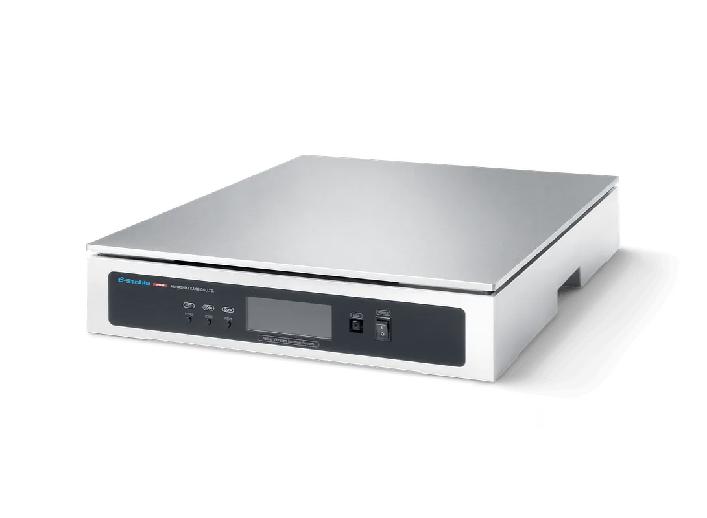

Aktywna izolacja drgań w 6 stopniach swobody dla lekkich urządzeń stołowych — bez sprężonego powietrza.
eStable Mini to aktywnie izolowana platforma antywibracyjna stołowa (table-top) do lekkich urządzeń, z aktywnym sterowaniem w 6 stopniach swobody. Aktywną regulację realizują aktuatory z cewkami drgającymi (voice coil), dzięki czemu platforma nie wymaga zasilania sprężonym powietrzem.
Poziomowanie odbywa się automatycznie, z blokadą jednym przyciskiem. Wbudowany wyświetlacz LCD prezentuje wykresy, m.in. widmo przyspieszeń. Wersja z aluminiową płytą pokrywy nadaje się do pomieszczeń czystych. Zasilanie: jednofazowe AC, 85–230 V, 50/60 Hz.

| Rodzaj | aktywna platforma antywibracyjna stołowa |
|---|---|
| Stopnie swobody | 6 (aktywnie sterowane) |
| Aktuatory | cewki drgające (voice coil) |
| Sprężone powietrze | niewymagane |
| Poziomowanie | automatyczne, blokada jednym przyciskiem |
| Wyświetlacz | LCD (m.in. widmo przyspieszeń) |
| Pomieszczenia czyste | tak (z aluminiową płytą pokrywy) |
| Zasilanie | 1-fazowe AC, 85–230 V, 50/60 Hz |
| Model | Wymiary (mm) | Masa własna | Maks. obciążenie |
|---|---|---|---|
| eStable Mini 450F | 400 × 500 × 80 | 19 kg | 120 kg |
| eStable Mini 560F | 500 × 600 × 84 | 28 kg | 100 kg |
Brak konieczności doprowadzenia sprężonego powietrza i automatyczne poziomowanie czynią platformę gotową do pracy zaraz po podłączeniu zasilania. Pomożemy dobrać model do masy i gabarytów Twojej aparatury.
Mikroskopy ze skanowaniem sondą (SPM), mikroskopy sił atomowych (AFM), elektronowe (SEM) oraz laserowe.
Czułe układy interferometryczne wymagające stabilnego, wolnego od drgań podłoża.
Wagi analityczne i precyzyjne, w których drgania otoczenia zaburzają odczyt.
Przyrządy do pomiaru chropowatości powierzchni oraz inne czułe instrumenty stołowe.
Pomożemy dobrać model eStable Mini do masy i gabarytów Twojej aparatury pomiarowej.
eStable Mini to aktywna platforma antywibracyjna stołowa ze sterowaniem w 6 stopniach swobody na cewkach drgających, działająca bez sprężonego powietrza i gotowa do pracy po podłączeniu zasilania. Dostępna w modelach 450F i 560F o obciążeniu do 120 kg, izoluje od drgań mikroskopy (SPM, AFM, SEM, laserowe), interferometry, wagi elektroniczne i przyrządy do pomiaru chropowatości powierzchni. Oficjalnym przedstawicielem Bilz w Polsce jest firma EKKON z Olsztyna.